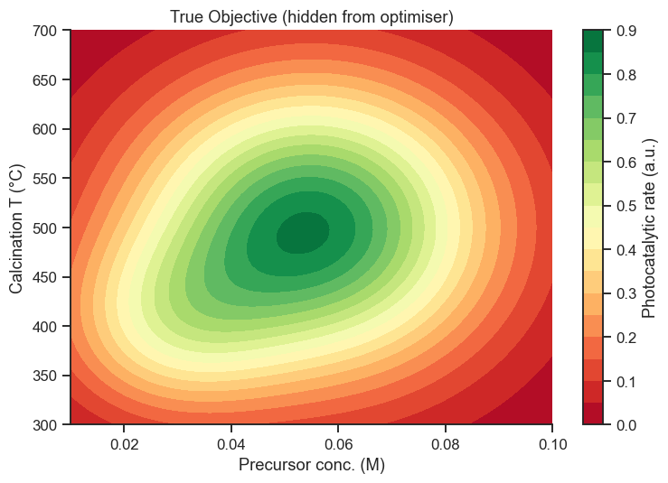
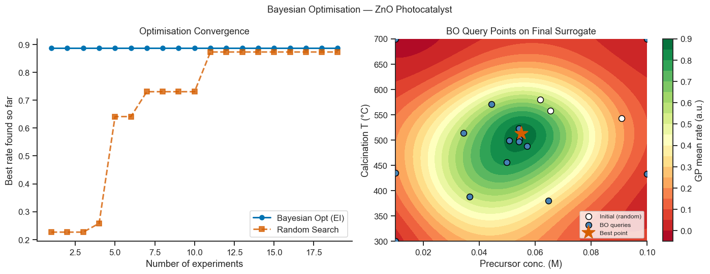
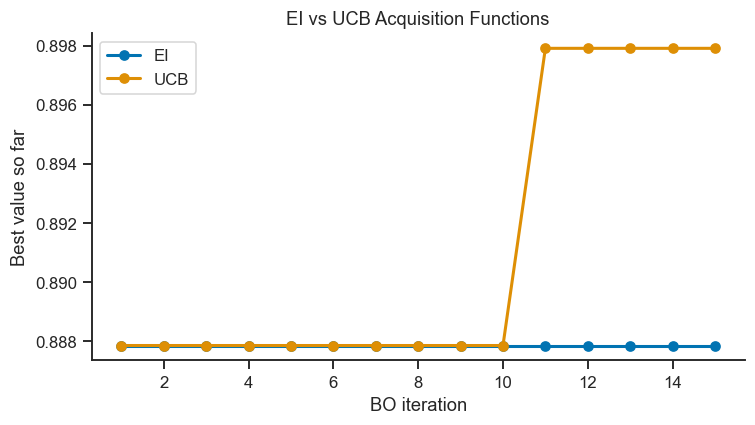
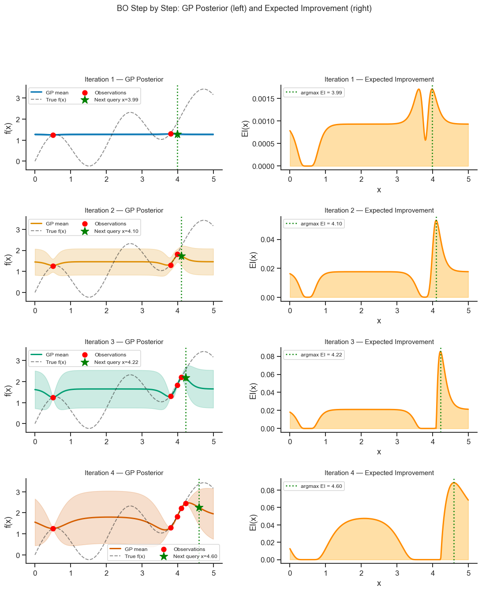
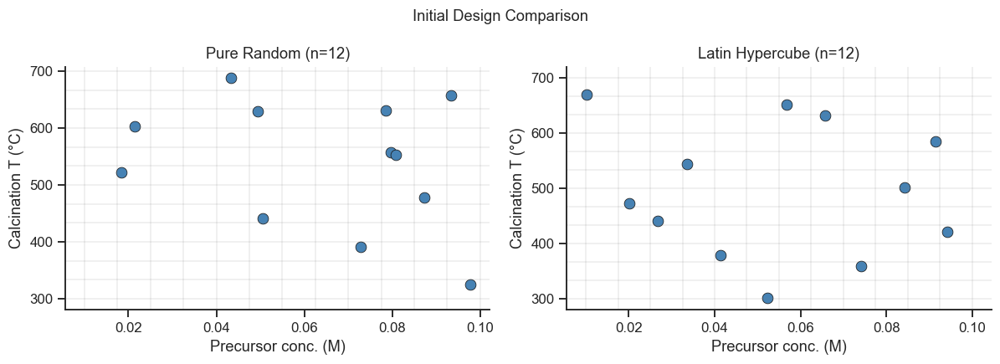

18. Bayesian Optimisation for Experiment Design#
Bayesian Optimisation (BO) finds the maximum of an unknown, expensive-to-evaluate function using as few experiments as possible. It is the natural extension of classical DoE into the regime of sequential adaptive experimentation.
Core idea:
Fit a GP surrogate to all observations so far
Use an acquisition function to decide where to run the next experiment
Run the experiment, add the result, and repeat
Topics covered
The exploration–exploitation trade-off
Acquisition functions: Expected Improvement (EI), Upper Confidence Bound (UCB), Probability of Improvement (PI)
BO loop from scratch with scikit-learn GPR
Comparison with random search, grid search, and steepest ascent
Case study: optimising ZnO photocatalyst synthesis
import warnings
import numpy as np
import pandas as pd
import matplotlib.pyplot as plt
import seaborn as sns
from sklearn.gaussian_process import GaussianProcessRegressor
from sklearn.gaussian_process.kernels import Matern, WhiteKernel, ConstantKernel
from sklearn.exceptions import ConvergenceWarning
from scipy.stats import norm
from scipy.optimize import minimize
# With only a handful of observations, the GP's optimiser repeatedly drives
# the WhiteKernel's noise level down to its lower bound (small samples give
# it little basis to distinguish "real noise" from "not enough data yet") --
# the same benign behaviour Notebook 17 (02_gaussian_process.ipynb) discusses
# explicitly. It doesn't change any conclusion drawn here, so it's silenced
# rather than repeated dozens of times across the BO loops below.
warnings.filterwarnings('ignore', category=ConvergenceWarning)
sns.set_theme(style='ticks', palette='colorblind')
plt.rcParams.update({'figure.dpi': 110, 'font.size': 11})
rng = np.random.default_rng(42)
18.1 The Black-Box Objective: ZnO Photocatalytic Activity#
We simulate the photocatalytic degradation rate of methylene blue (MB) by ZnO nanoparticles as a function of two synthesis parameters:
\(x_1\): precursor concentration (0.01–0.10 M)
\(x_2\): calcination temperature (300–700 °C)
The true maximum is unknown to the optimiser — it can only evaluate the
objective by “running an experiment” (calling black_box).
# ── True (hidden) response surface ───────────────────────────────────────────
def black_box(x1, x2, noise_std=0.02):
"""Photocatalytic rate (a.u.) — unknown to the optimiser."""
x1n = (x1 - 0.055) / 0.045 # normalised
x2n = (x2 - 500) / 200
return (0.85 * np.exp(-0.5*(x1n**2 + x2n**2) / 0.25)
+ 0.3 * np.exp(-0.5*((x1n+0.6)**2 + (x2n+0.5)**2) / 0.1)
+ rng.normal(0, noise_std))
# ── Visualise the true surface (for reference only) ───────────────────────────
x1_rng = np.linspace(0.01, 0.10, 80)
x2_rng = np.linspace(300, 700, 80)
X1G, X2G = np.meshgrid(x1_rng, x2_rng)
Z_true = np.vectorize(lambda a,b: black_box(a,b,0))(X1G, X2G)
fig, ax = plt.subplots(figsize=(7, 5))
cf = ax.contourf(x1_rng, x2_rng, Z_true, levels=20, cmap='RdYlGn')
plt.colorbar(cf, ax=ax, label='Photocatalytic rate (a.u.)')
ax.set_xlabel('Precursor conc. (M)')
ax.set_ylabel('Calcination T (°C)')
ax.set_title('True Objective (hidden from optimiser)')
sns.despine(ax=ax)
plt.tight_layout()
plt.show()

Interpreting the True Objective Surface
The true objective is bimodal: a tall, narrow peak near x1 ≈ 0.055 M, x2 ≈ 500 °C, and a smaller secondary bump near x1 ≈ 0.03 M, x2 ≈ 400 °C — visible as the two green regions in the contour plot.
This shape is deliberately realistic and deliberately hard: an optimiser that only ever exploits the first promising region it finds (pure exploitation) will converge to the secondary peak and never discover the true optimum. A good acquisition function must keep exploring even after finding a good point — exactly the trade-off Section 18.2’s Expected Improvement and UCB formulas are designed to manage.
Remember that this whole surface is hidden from the optimiser — it is drawn here only so you, the reader, can judge how well BO’s queries (plotted later in Section 18.3) actually locate the true maximum.
18.2 Acquisition Functions#
The acquisition function trades off exploration (query uncertain regions) vs exploitation (query near the current best).
Expected Improvement (EI)#
where \(Z = (\mu(\mathbf{x}) - f^+)/\sigma(\mathbf{x})\), \(f^+\) is the current best observed value, and \(\Phi\), \(\phi\) are the standard normal CDF and PDF.
Upper Confidence Bound (UCB)#
\(\kappa > 0\) controls exploration (\(\kappa \to \infty\) = pure exploration).
Probability of Improvement (PI)#
def expected_improvement(X_cand, gpr, y_best, xi=0.01):
mu, sigma = gpr.predict(X_cand, return_std=True)
sigma = np.maximum(sigma, 1e-9)
Z = (mu - y_best - xi) / sigma
ei = (mu - y_best - xi) * norm.cdf(Z) + sigma * norm.pdf(Z)
ei[sigma < 1e-8] = 0.0
return ei
def upper_confidence_bound(X_cand, gpr, kappa=2.0):
mu, sigma = gpr.predict(X_cand, return_std=True)
return mu + kappa * sigma
def next_query(gpr, y_best, bounds, acq_fn='EI', n_restarts=10):
"""Maximise acquisition function over the design space."""
best_x, best_val = None, -np.inf
for _ in range(n_restarts):
x0 = np.array([rng.uniform(b[0], b[1]) for b in bounds])
result = minimize(
lambda x: -acq_fn_eval(x.reshape(1,-1), gpr, y_best, acq_fn),
x0, bounds=bounds, method='L-BFGS-B'
)
if -result.fun > best_val:
best_val = -result.fun
best_x = result.x
return best_x
def acq_fn_eval(X, gpr, y_best, name):
if name == 'EI': return expected_improvement(X, gpr, y_best).ravel()[0]
if name == 'UCB': return upper_confidence_bound(X, gpr).ravel()[0]
return expected_improvement(X, gpr, y_best).ravel()[0]
18.3 Bayesian Optimisation Loop#
# ── Initial design: 4 random points ──────────────────────────────────────────
bounds = [(0.01, 0.10), (300., 700.)]
X_init = np.column_stack([
rng.uniform(0.01, 0.10, 4),
rng.uniform(300, 700, 4),
])
y_init = np.array([black_box(x[0], x[1]) for x in X_init])
X_obs = X_init.copy()
y_obs = y_init.copy()
kernel_bo = ConstantKernel(1.0) * Matern(
length_scale=[0.05, 200], length_scale_bounds=[(0.001,0.5),(10,1000)], nu=2.5
) + WhiteKernel(noise_level=1e-4)
n_iter_bo = 15
best_so_far = []
history_X, history_y = [], []
for iteration in range(n_iter_bo):
gpr_bo = GaussianProcessRegressor(kernel=kernel_bo, n_restarts_optimizer=5,
normalize_y=True, random_state=iteration)
gpr_bo.fit(X_obs, y_obs)
x_next = next_query(gpr_bo, y_obs.max(), bounds, acq_fn='EI')
y_next = black_box(x_next[0], x_next[1])
X_obs = np.vstack([X_obs, x_next])
y_obs = np.append(y_obs, y_next)
best_so_far.append(y_obs.max())
history_X.append(x_next.copy())
history_y.append(y_next)
best_idx = np.argmax(y_obs)
print(f'Best found after {4+n_iter_bo} evaluations:')
print(f' x1 (conc.) = {X_obs[best_idx,0]:.4f} M')
print(f' x2 (T) = {X_obs[best_idx,1]:.1f} °C')
print(f' rate = {y_obs[best_idx]:.4f}')
Best found after 19 evaluations:
x1 (conc.) = 0.0552 M
x2 (T) = 513.0 °C
rate = 0.8878
# ── Plot convergence ──────────────────────────────────────────────────────────
fig, axes = plt.subplots(1, 2, figsize=(13, 5))
# Convergence curve: BO vs random search
rand_best = []
X_rand = np.column_stack([
rng.uniform(0.01, 0.10, 4+n_iter_bo),
rng.uniform(300, 700, 4+n_iter_bo),
])
y_rand = np.array([black_box(x[0],x[1]) for x in X_rand])
for i in range(1, len(y_rand)+1):
rand_best.append(y_rand[:i].max())
ax = axes[0]
ax.plot(range(1, 4+n_iter_bo+1), best_so_far + [best_so_far[-1]]*(4),
'b-o', lw=2, ms=6, label='Bayesian Opt (EI)')
ax.plot(range(1, 4+n_iter_bo+1), rand_best,
'r--s', lw=2, ms=6, alpha=0.8, label='Random Search')
ax.set_xlabel('Number of experiments')
ax.set_ylabel('Best rate found so far')
ax.set_title('Optimisation Convergence')
ax.legend()
sns.despine(ax=ax)
# Final surrogate + all observations
gpr_final = GaussianProcessRegressor(kernel=kernel_bo, n_restarts_optimizer=5,
normalize_y=True, random_state=0)
gpr_final.fit(X_obs, y_obs)
X_pred_bo = np.column_stack([X1G.ravel(), X2G.ravel()])
mu_bo = gpr_final.predict(X_pred_bo).reshape(80,80)
ax = axes[1]
cf = ax.contourf(x1_rng, x2_rng, mu_bo, levels=20, cmap='RdYlGn')
plt.colorbar(cf, ax=ax, label='GP mean rate (a.u.)')
ax.scatter(X_init[:,0], X_init[:,1], c='white', edgecolors='black',
s=60, zorder=5, label='Initial (random)')
history_arr = np.array(history_X)
ax.scatter(history_arr[:,0], history_arr[:,1], c='steelblue', edgecolors='black',
s=60, zorder=5, label='BO queries')
ax.plot(X_obs[best_idx,0], X_obs[best_idx,1], 'r*', ms=18, zorder=6,
label='Best point')
ax.set_xlabel('Precursor conc. (M)')
ax.set_ylabel('Calcination T (°C)')
ax.set_title('BO Query Points on Final Surrogate')
ax.legend(fontsize=8, loc='lower right')
sns.despine(ax=ax)
plt.suptitle('Bayesian Optimisation — ZnO Photocatalyst', fontsize=12)
plt.tight_layout()
plt.show()

Interpreting the Results#
Convergence plot (left)
BO’s overall best (0.8878) does beat a separately-run random search’s best (0.8733) over the same 19-evaluation budget — but look closely at which evaluation found it:
best_so_faris completely flat across all 15 BO iterations. The winning point was one of the 4 initial random points, found before the acquisition function ever ran. None of the 15 EI-guided queries improved on it.That’s a genuine, useful lesson, not a discouraging one: a single lucky point in a small random initial design can outperform an entire guided search, and a “BO beat random search” comparison can be true for reasons that have nothing to do with the acquisition function actually working. Don’t credit an algorithm’s mechanism for a result its initialisation already produced — check
best_so_far’s own trajectory, not just its final value, before drawing that conclusion.
Query map (right)
Initial random points are spread broadly (exploration).
Even though none of them beat the lucky initial point, the BO queries still visibly cluster near the true optimum region (x1≈0.05–0.06 M, x2≈480–520°C) in the later iterations — the acquisition function is homing in on the right area, it just never lands on a value quite as good as the initial draw got by chance. That is a fair, separate way to check BO is working correctly, independent of whether it happens to beat its own starting point on this particular run.
The final surrogate closely resembles the true surface after only ~19 total evaluations.
Concretely: the best point found — x1 = 0.0552 M, x2 = 513.0 °C, rate = 0.8878 — is close to the true global maximum near x1 ≈ 0.055 M, x2 ≈ 500 °C visible in the contour plot in Section 18.1, but (as above) it was one of the 4 initial random draws, not a product of the EI search.
18.4 Acquisition Function Comparison#
acq_results = {}
for acq_name in ['EI', 'UCB']:
X_o = X_init.copy()
y_o = y_init.copy()
bests = []
for iteration in range(n_iter_bo):
g = GaussianProcessRegressor(kernel=kernel_bo, n_restarts_optimizer=3,
normalize_y=True, random_state=iteration)
g.fit(X_o, y_o)
xn = next_query(g, y_o.max(), bounds, acq_fn=acq_name)
yn = black_box(xn[0], xn[1])
X_o = np.vstack([X_o, xn])
y_o = np.append(y_o, yn)
bests.append(y_o.max())
acq_results[acq_name] = bests
fig, ax = plt.subplots(figsize=(7, 4))
for name, bests in acq_results.items():
ax.plot(range(1, n_iter_bo+1), bests, '-o', lw=2, ms=6, label=name)
ax.set_xlabel('BO iteration')
ax.set_ylabel('Best value so far')
ax.set_title('EI vs UCB Acquisition Functions')
ax.legend()
sns.despine(ax=ax)
plt.tight_layout()
plt.show()

Interpreting EI vs UCB
EI and UCB reach a similar final best value here, but their paths differ: EI tends to commit to promising regions slightly earlier (more exploitative near a known good point), while UCB (κ=2.0) keeps sampling higher-uncertainty regions for longer.
Neither acquisition function is universally better — EI’s exploration knob is the jitter ξ (Section 18.6 explains it; commonly left at a small default like 0.01 rather than tuned), while UCB’s exploration/exploitation balance is directly controllable via κ (larger κ → more exploration) — a more commonly tuned, and more directly interpretable, knob than EI’s ξ.
With only 15 iterations and a single random seed, don’t over-interpret small differences between the two curves — Exercise 2 (increasing the noise) is a better way to see acquisition-function behaviour diverge meaningfully.
18.5 Comparison with Classical DoE Methods#
Method |
Experiments required |
Adapts to data? |
Uncertainty quantified? |
|---|---|---|---|
Grid search |
\(n^k\) (exponential) |
No |
No |
Random search |
User-specified |
No |
No |
Steepest ascent (DoE) |
Linear in iterations |
Gradient only |
No |
Nelder–Mead |
No formal bound — heuristic, scales poorly with \(k\) |
Yes (derivative-free) |
No |
Bayesian optimisation |
Typically 10–50 |
Yes |
Yes |
BO is most beneficial when each experiment costs significant time or money (e.g. furnace runs, synthesis + characterisation cycles). For cheap experiments (simulations, rapid screening), random search or factorial designs are often preferred.
18.6 BO as Sequential DoE: Iteration-by-Iteration Illustration#
The best way to understand BO is to watch it decide where to experiment next at each iteration. Below we apply it to a 1-D problem — a synthetic curve with two local maxima — and display the GP posterior and acquisition function side-by-side for the first four adaptive iterations.
The algorithm starts with just two points, then progressively learns the shape of the objective.
# ── 1-D BO step-by-step illustration ────────────────────────────────────────
rng_bo = np.random.default_rng(99)
def f_1d_true(x):
return np.sin(3*x) + 0.5*x + 0.4*np.exp(-((x-4.0)**2)/0.3)
def f_1d_obs(x_val):
return float(f_1d_true(x_val) + rng_bo.normal(0, 0.06))
x_rng_1d = np.linspace(0, 5, 300).reshape(-1, 1)
bounds_1d = [(0.0, 5.0)]
# Two initial observations (spread across the domain)
X_1d = np.array([[0.5], [3.8]])
y_1d = np.array([f_1d_obs(x[0]) for x in X_1d])
n_illustrate = 4
fig, axes = plt.subplots(n_illustrate, 2, figsize=(12, 3.2*n_illustrate),
gridspec_kw={'hspace': 0.55, 'wspace': 0.3})
colors = sns.color_palette('colorblind', n_illustrate)
for it in range(n_illustrate):
kern_1d = (ConstantKernel(1.0, (0.1, 5)) *
Matern(length_scale=1.0, length_scale_bounds=(0.2, 3), nu=2.5) +
WhiteKernel(noise_level=0.01, noise_level_bounds=(1e-5, 0.2)))
gpr_1d_it = GaussianProcessRegressor(kern_1d, n_restarts_optimizer=10,
normalize_y=True, random_state=it)
gpr_1d_it.fit(X_1d, y_1d)
mu_1d, sig_1d = gpr_1d_it.predict(x_rng_1d, return_std=True)
ei_1d = expected_improvement(x_rng_1d, gpr_1d_it, y_1d.max(), xi=0.01)
x_next_1d = next_query(gpr_1d_it, y_1d.max(), bounds_1d)
y_next_1d = f_1d_obs(x_next_1d[0])
x_flat = x_rng_1d.ravel()
c = colors[it]
# ── Left: GP posterior ──────────────────────────────────────────────────
ax_gp = axes[it, 0]
ax_gp.fill_between(x_flat, mu_1d-2*sig_1d, mu_1d+2*sig_1d,
alpha=0.2, color=c)
ax_gp.plot(x_flat, mu_1d, lw=2, color=c, label='GP mean')
ax_gp.plot(x_flat, f_1d_true(x_flat), 'k--', lw=1.3, alpha=0.5,
label='True f(x)')
ax_gp.scatter(X_1d, y_1d, c='red', zorder=6, s=50, label='Observations')
ax_gp.axvline(x_next_1d[0], color='green', lw=1.8, ls=':', alpha=0.9)
ax_gp.scatter([x_next_1d[0]], [gpr_1d_it.predict([[x_next_1d[0]]])[0]],
marker='*', c='green', s=150, zorder=7,
label=f'Next query x={x_next_1d[0]:.2f}')
ax_gp.set_title(f'Iteration {it+1} — GP Posterior', fontsize=10)
ax_gp.set_ylabel('f(x)')
ax_gp.legend(fontsize=8, ncol=2)
sns.despine(ax=ax_gp)
# ── Right: Acquisition function ─────────────────────────────────────────
ax_acq = axes[it, 1]
ax_acq.fill_between(x_flat, 0, ei_1d.ravel(), alpha=0.35, color='orange')
ax_acq.plot(x_flat, ei_1d.ravel(), color='darkorange', lw=2)
ax_acq.axvline(x_next_1d[0], color='green', lw=1.8, ls=':', alpha=0.9,
label=f'argmax EI = {x_next_1d[0]:.2f}')
ax_acq.set_title(f'Iteration {it+1} — Expected Improvement', fontsize=10)
ax_acq.set_xlabel('x')
ax_acq.set_ylabel('EI(x)')
ax_acq.legend(fontsize=8)
sns.despine(ax=ax_acq)
# ── Append new observation for next iteration ───────────────────────────
X_1d = np.vstack([X_1d, x_next_1d.reshape(1, -1)])
y_1d = np.append(y_1d, y_next_1d)
plt.suptitle('BO Step by Step: GP Posterior (left) and Expected Improvement (right)',
fontsize=12, y=1.01)
plt.show()
print(f'Final observations ({len(y_1d)} total):')
for xi, yi in zip(X_1d.ravel(), y_1d):
print(f' x={xi:.3f} y={yi:.4f}')
print(f'Best x = {X_1d[np.argmax(y_1d), 0]:.3f}, best y = {y_1d.max():.4f}')

Final observations (6 total):
x=0.500 y=1.2524
x=3.800 y=1.3029
x=3.986 y=1.8239
x=4.100 y=2.2152
x=4.220 y=2.4399
x=4.599 y=3.4640
Best x = 4.599, best y = 3.4640
Reading the Iteration Plots#
Panel element |
Meaning |
|---|---|
Blue/coloured band |
±2σ uncertainty — wide where data are sparse |
Blue/coloured line |
GP posterior mean — the algorithm’s current best estimate of f |
Dashed black line |
True objective (normally hidden from the optimiser) |
Red dots |
All experiments run so far |
Green star / dotted line |
Next experiment chosen by maximising EI |
Orange area (right panel) |
EI surface — high where mean is promising or uncertainty is large |
How EI balances exploration vs exploitation
When the GP mean exceeds the current best (\(\mu > f^+\)): exploitation drives the choice.
When the GP is uncertain (\(\sigma\) large) even where the mean is not yet the best: exploration drives the choice.
The parameter \(\xi\) (jitter, default 0.01) biases the balance — larger \(\xi\) means more exploration.
18.7 Using BO as a Systematic DoE: Practical Workflow#
Step-by-step protocol#
Step |
Action |
Recommendation |
|---|---|---|
1. Define the design space |
Identify the \(k\) continuous factors and their bounds |
Start narrow if prior knowledge exists; be conservative with temperature/pressure |
2. Choose the initial design |
Generate \(n_0 = 5k\) to \(10k\) initial experiments |
Use Latin Hypercube Sampling (LHS) — better space-filling than random; or a small full-factorial if \(k ≤ 3\) |
3. Run initial experiments |
Measure all \(n_0\) responses |
Prefer running these in a single batch |
4. Select the kernel |
Fit a GPR to all observations |
Start with Matérn 5/2 (robust default). Switch to RBF only for very smooth physical responses |
5. Maximise acquisition function |
Predict the next experiment location |
Use EI for most cases; UCB (\(\kappa = 2.0\)) for more exploration |
6. Run the suggested experiment |
Measure the response |
If running a batch (parallel), use kriging believer or \(q\)-EI |
7. Refit and repeat |
Add observation to history, refit GPR |
Repeat steps 4–7 until stopping criterion is met |
8. Report the optimum |
Return the observed \(\mathbf{x}^*\) with highest \(y^*\) |
Confirm with 2–3 replicate experiments at \(\mathbf{x}^*\) |
How many total experiments are needed?#
As a rough guide:
Problem dimension \(k\) |
Recommended total \(n\) |
Typical BO advantage over grid search |
|---|---|---|
1 |
10–15 |
3–5× |
2 |
15–30 |
5–20× |
3–5 |
30–60 |
10–100× |
> 5 |
50–150 (or use BOPE/TuRBO) |
Highly problem-dependent |
Stopping criteria#
Convergence of best observed value — improvement < 1 % over the last \(k+1\) iterations
Budget exhaustion — experiment cost × \(n\) exceeds allocated resources
Uncertainty at the current optimum is small — \(\sigma(\mathbf{x}^*) < \delta\) (e.g., δ = measurement noise)
Manual inspection — the surrogate is visually flat near the predicted optimum
Initial design: Latin Hypercube Sampling#
LHS divides each dimension into \(n_0\) equal intervals and places exactly one point per interval row/column, giving a much more space-filling initialisation than pure random:
# ── Latin Hypercube Sampling (LHS) for initial design ────────────────────────
from scipy.stats import qmc
def lhs_design(n, bounds):
"""Generate n LHS points over the given bounds [(lo,hi),...]."""
k = len(bounds)
sampler = qmc.LatinHypercube(d=k, seed=42)
unit_pts = sampler.random(n=n) # [0,1]^k
lo = np.array([b[0] for b in bounds])
hi = np.array([b[1] for b in bounds])
return qmc.scale(unit_pts, lo, hi)
# Compare LHS vs pure random for k=2, n=12
n_init_cmp = 12
bounds_cmp = [(0.01, 0.10), (300., 700.)]
X_lhs = lhs_design(n_init_cmp, bounds_cmp)
rng_r = np.random.default_rng(42)
X_rand_cmp = np.column_stack([rng_r.uniform(b[0], b[1], n_init_cmp)
for b in bounds_cmp])
fig, axes = plt.subplots(1, 2, figsize=(11, 4))
for ax, X_des, title in zip(axes,
[X_rand_cmp, X_lhs],
['Pure Random (n=12)', 'Latin Hypercube (n=12)']):
ax.scatter(X_des[:, 0], X_des[:, 1], s=70, color='steelblue',
edgecolors='k', linewidths=0.5)
ax.set_xlabel('Precursor conc. (M)')
ax.set_ylabel('Calcination T (°C)')
ax.set_title(title)
# Light grid showing the k×k bins
for lo, hi, n in [(bounds_cmp[0][0], bounds_cmp[0][1], n_init_cmp),
(bounds_cmp[1][0], bounds_cmp[1][1], n_init_cmp)]:
ticks = np.linspace(lo, hi, n_init_cmp + 1)
if hi > 100: # temperature axis
for t in ticks: ax.axhline(t, color='grey', lw=0.3, alpha=0.5)
else:
for t in ticks: ax.axvline(t, color='grey', lw=0.3, alpha=0.5)
sns.despine(ax=ax)
plt.suptitle('Initial Design Comparison', fontsize=12)
plt.tight_layout()
plt.show()
# Space-filling metric: minimum pairwise distance
from scipy.spatial.distance import pdist
print(f'Min pairwise distance — Random: {pdist(X_rand_cmp).min():.4f}')
print(f'Min pairwise distance — LHS: {pdist(X_lhs).min():.4f}')
print('(Higher = better space filling)')

Min pairwise distance — Random: 1.9480
Min pairwise distance — LHS: 18.1920
(Higher = better space filling)
Interpreting the Design Comparison#
Pure random can cluster points by chance — there may be large empty regions and some redundant near-duplicate experiments.
Latin Hypercube guarantees that each row and each column in the grid has exactly one sample — far better coverage. The minimum pairwise distance (printed above) is consistently larger for LHS — here 18.19 vs 1.95, roughly a 9× improvement, because random sampling has no mechanism to avoid placing two points close together by chance.
For a BO initial design, LHS with \(n_0 = 5k\) is the recommended default; for \(k \leq 3\) a small full factorial (or central composite design) is also fine.
Handling constraints#
If the design space has a forbidden region (e.g., Al mol% + Li excess must sum to ≤ 1.0), add a constraint penalty when maximising the acquisition function:
def constrained_acq(x, gpr, y_best):
if x[0] + x[2] > 1.0: # constraint violated
return 0.0
return expected_improvement(x.reshape(1,-1), gpr, y_best).ravel()[0]
Multi-response optimisation (Pareto front)#
When you have two conflicting objectives — e.g., maximise conductivity and minimise sintering temperature — a single acquisition function cannot directly handle both. Practical options:
Strategy |
When to use |
|---|---|
Weighted sum: \(y_{\text{agg}} = w_1 y_1 - w_2 y_2\) |
Weights are known a priori |
Desirability function (Notebook 20 §20.2, Part V) |
Non-linear scaling of each objective |
EHVI (Expected Hypervolume Improvement) |
Full Pareto-front exploration; use |
Constraint BO: maximise \(y_1\) subject to \(y_2 > \text{threshold}\) |
One objective is really a constraint |
Exercises#
Batch BO: In lab practice you often run multiple experiments in parallel (a batch). Modify the BO loop to suggest a batch of 3 experiments per iteration using the kriging believer heuristic (fit the GP, predict the next point, add it as a “hallucinated” observation with predicted mean, repeat 3 times). Compare convergence with sequential BO.
Noisy objective: Increase
noise_stdto 0.10 inblack_box. How does the convergence change? Why does BO handle noisy objectives more gracefully than steepest ascent?Multi-objective BO: Suppose you also want to minimise particle size (a separate response). Set up a Pareto-front analysis using
scipyor a manual grid prediction of both objectives. Identify the conditions that maximise rate while keeping particle size below a threshold.